左列为改造前、右列为改造后，均取自同一台运行中的网关（localhost:3000，2 台真实 Agent）
与同一视口，截图由无头浏览器实时渲染。
KPI 磁贴原本"数字大字 + 一行小字"，缺判断依据；指标口径写错（"上报延迟 5456 分钟"） 且异常数恒为 0 却挂红色条 —— 容易被误读成告警。
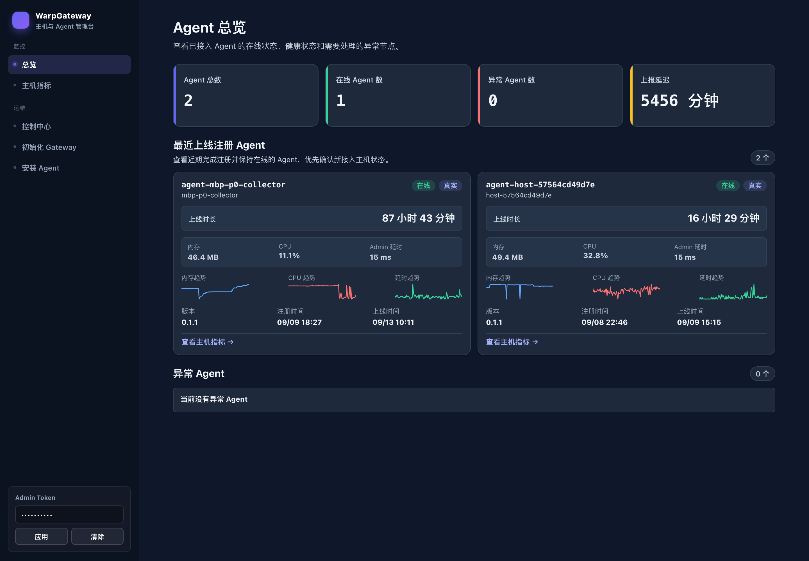
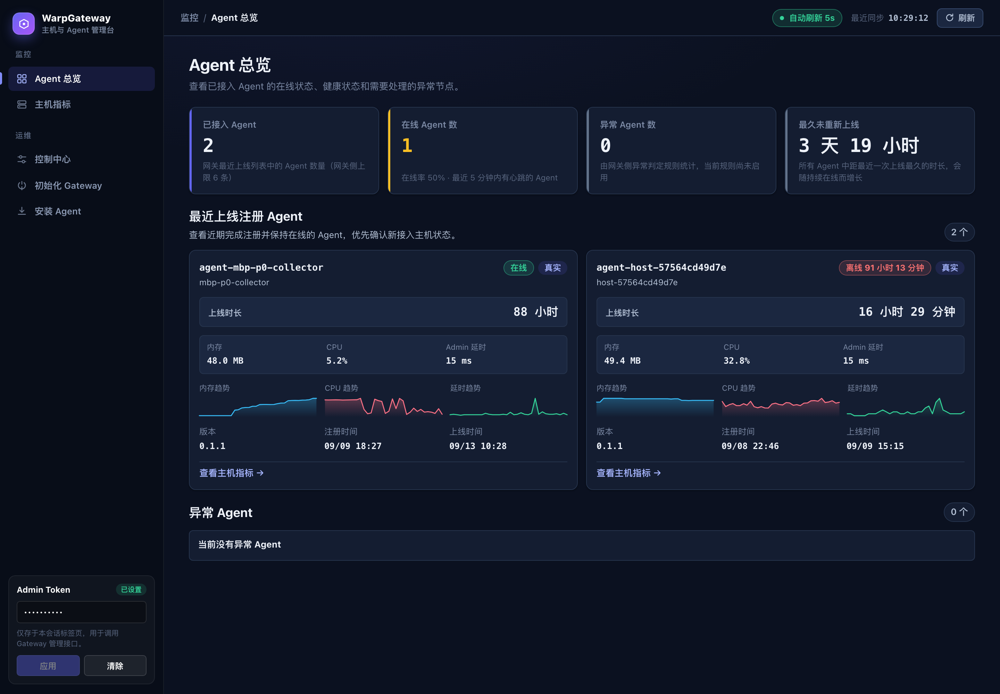
这是与"多主机"定位最不匹配的一页：卡片网格无法排序、无法筛选、无法搜索，
且内存总量缺失时会渲染出 / …。10 台主机就已经不可用了。
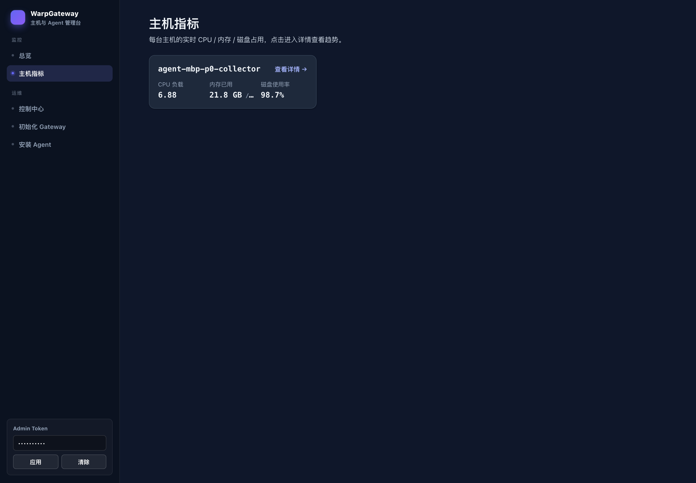
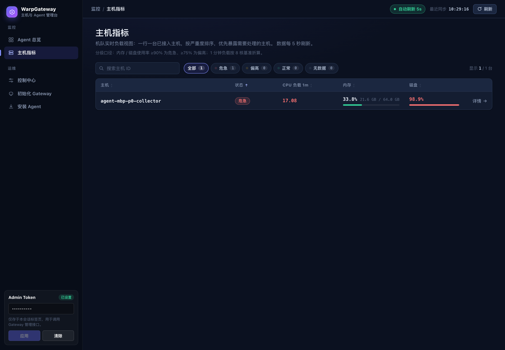
改造前的趋势图被纵向拉伸到失真、没有 Y 轴、没有刻度、没有悬停取值， 图上唯一能读到的数字是图例里最后一个点。
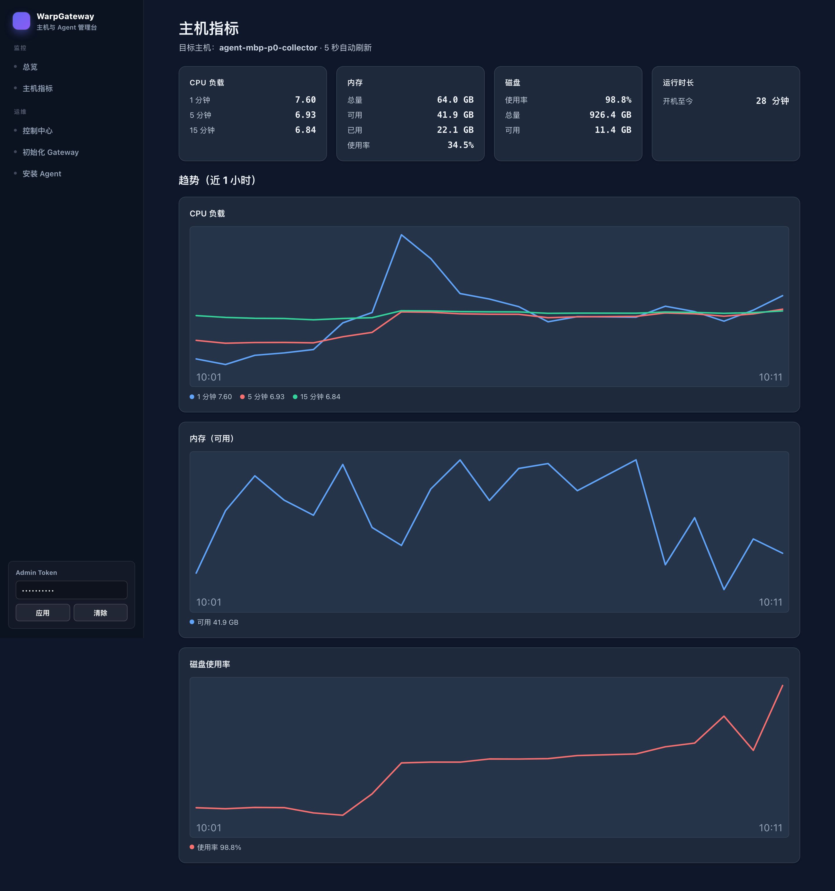
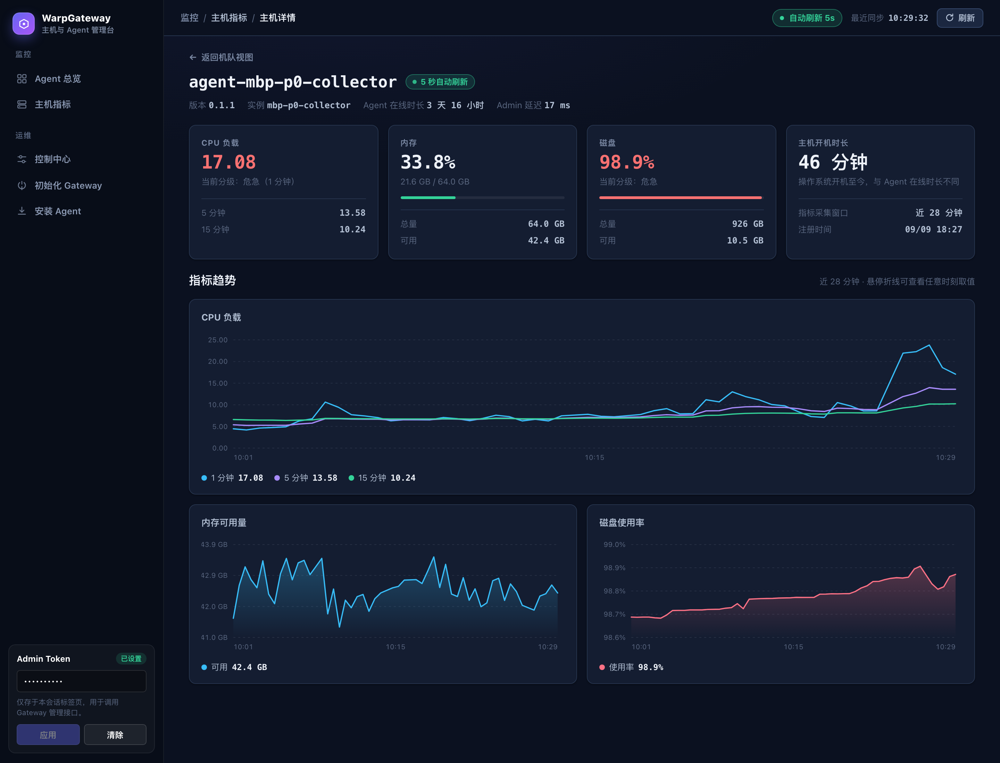
暗色主题里两个输入框是白底、占位文字几乎看不见；目标主机靠手输、
默认值还是假的 agent-prod-001；而且暂停这种不可逆操作点一下就直接派发。
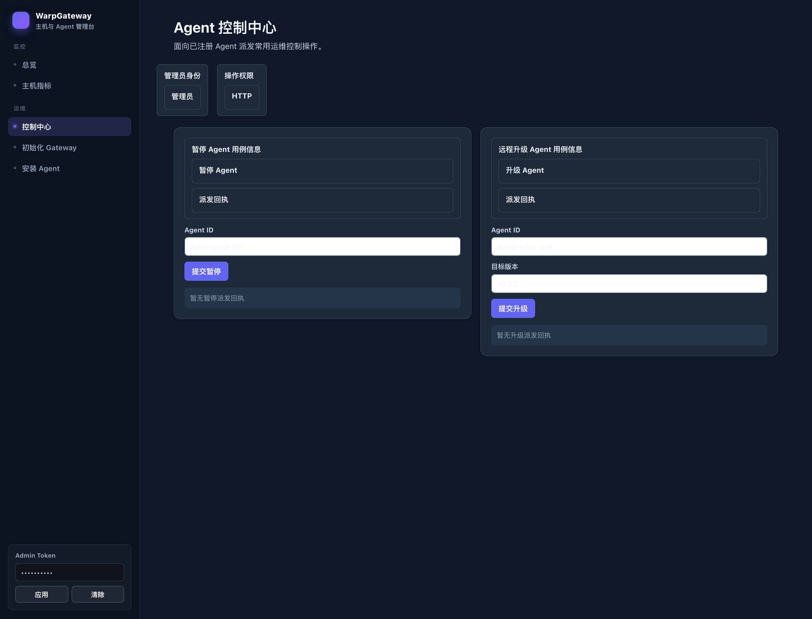
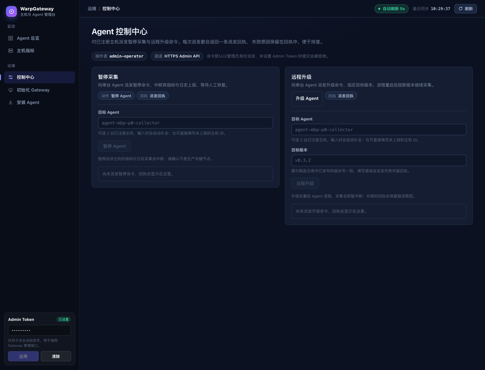
命令块用红色标关键字 —— 在运维界面里红色代表故障，一段正常命令看起来像报错； 页头也没有告诉用户"装完之后去哪儿确认"。
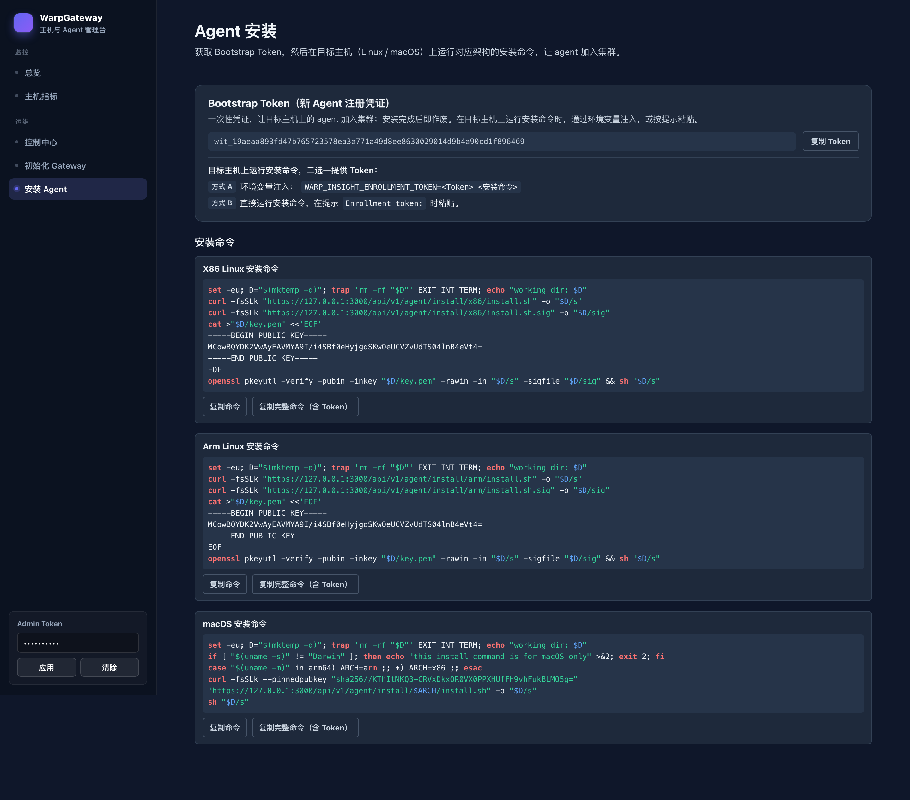
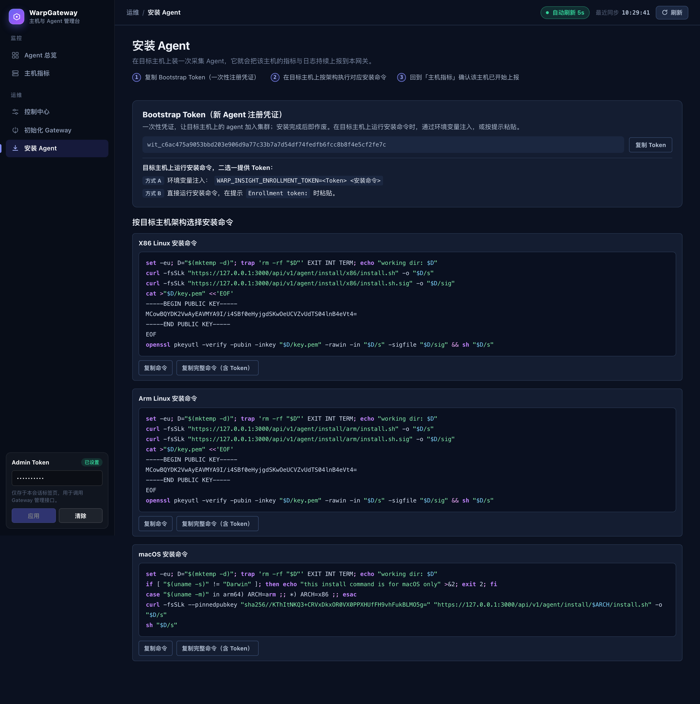
这是最明显的一页：模型内部术语被直接渲染出来 ——
GATEWAY / INITIALIZEGATEWAYVIAURL、USECASE、
InitializeGatewayViaUrl → GatewayInitialConfig、
"触发 InitializeGatewayViaUrl"。
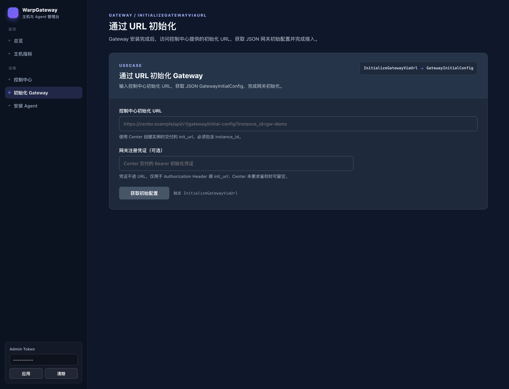
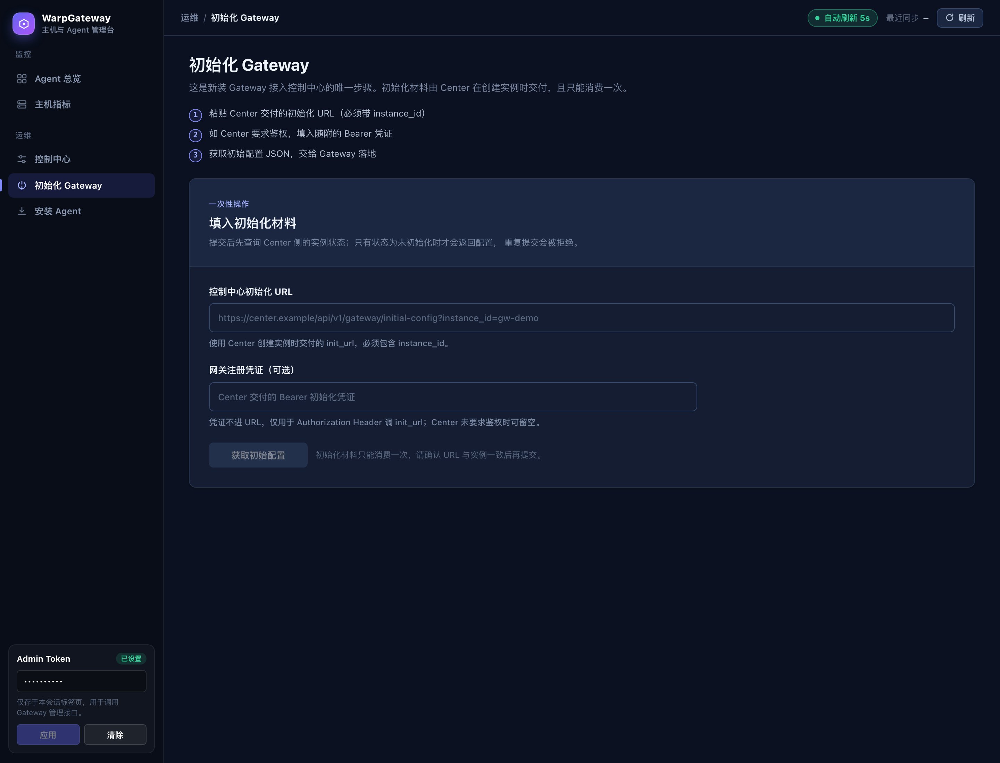
| 位置 | 现象 | 依据 | 影响 |
|---|---|---|---|
| overview.rs:110 | unhealthy_agents 始终返回 0，异常判定未实现 |
unhealthy_agents: 0 为字面量 |
界面 总览"异常 Agent"永远显示 0，不能当作系统健康证明 |
| overview.rs:97 | total_agents 取自最近上线列表并 truncate(6) |
截断发生在计数之前 | 口径 超过 6 台主机后"Agent 总数"会失真 |
| overview.rs:107 | last_seen_lag_seconds 实为"最久的 online_since 距今"，随时间单调增长 |
原界面标签写作"上报延迟" | 误读 持续在线的正常主机会被读成延迟告警，已改名并去掉危急着色 |
| admin.ts:146 | 令牌存在 sessionStorage，而安全用例禁止产物中出现 sessionStorage |
tests/admin-token-bundle.test.mjs:11 |
既有失败 npm run test:bundle 在改造前就已失败，与本次改动无关 |
| Terminal | 日志采集（VictoriaLogs / miss 镜像）在控制台完全没有入口 | 路由仅 6 条，均为 Agent 管理 | 缺位 定位是"指标 + 日志"，日志侧只能去 VictoriaLogs 原生界面看 |